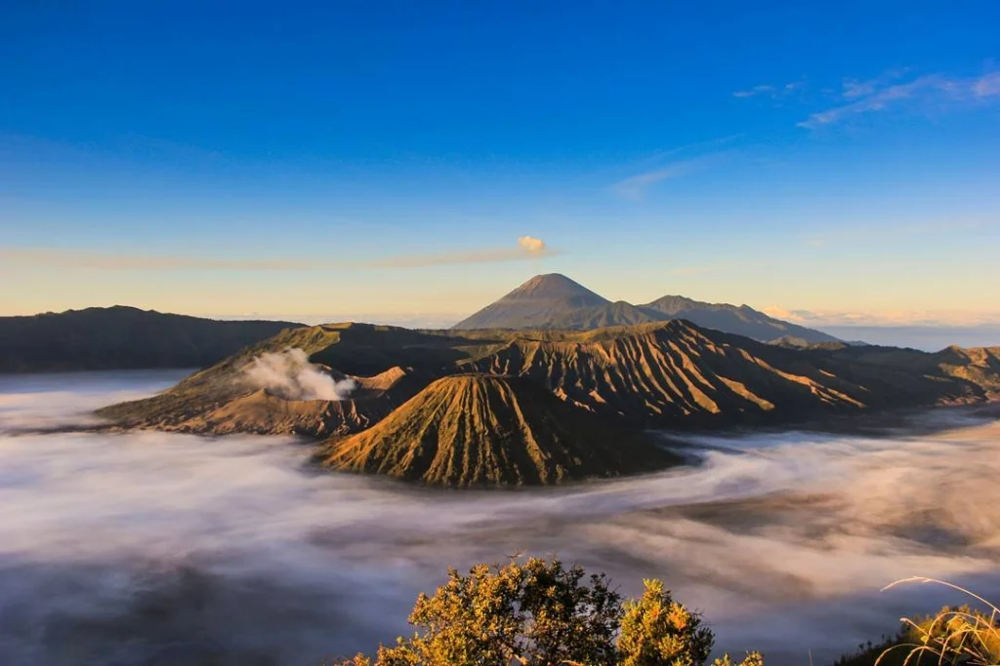
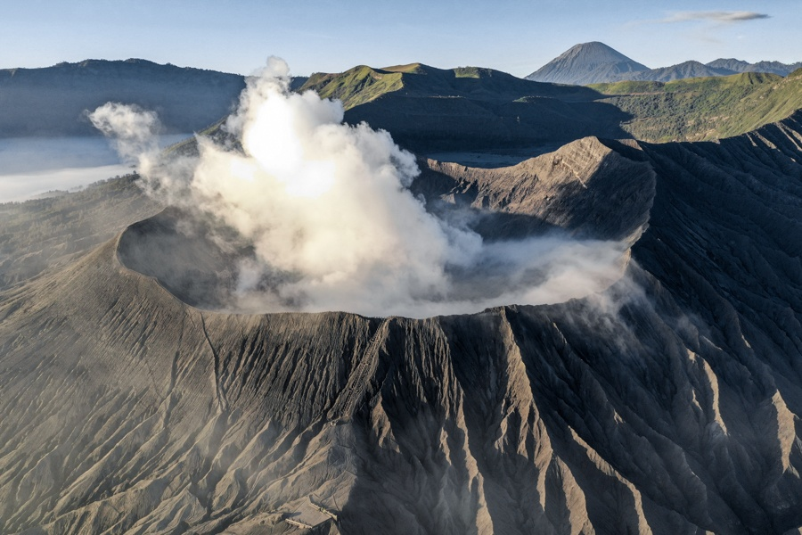

Mount Bromo or in the Tengger language spelled "Brama", also called the Tengger Caldera, is an active volcano in East Java, Indonesia. This mountain has a height of 2,329 meters above sea level and is located in four districts, namely Probolinggo Regency, Pasuruan Regency, Lumajang Regency and Malang Regency. Mount Bromo is famous as a major tourist attraction in East Java. As a tourist attraction, Bromo is interesting because of its status as an active volcano. Mount Bromo is included in the Bromo Tengger Semeru National Park area.
 Tour Type : Adventure
Participants : 1-8 Persons
Price : Rp30.000
Rating : 4 Stars
Categories : Mountain & Nature